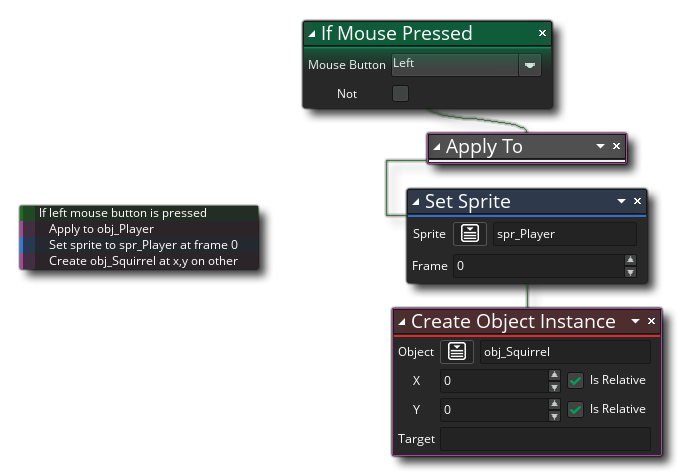

Die meisten Aktionen in den DnD™ -Bibliotheken haben eine Option, die Aktion auf verschiedene Arten anzuwenden. Dies nennt man den Aktionsradius einstellen und es kann eine von mehreren Dingen:  Im Wesentlichen sagen Sie GameMaker Studio 2 von welcher Instanz die Aktion ausgeführt werden soll. Der Standardaktionsbereich ist self Dies bedeutet, dass nach dem Erstellen des Objekts als Instanz im Raum die Instanz den Aktionscode ausführt. Dies ist jedoch nicht immer das, was Sie wollen, und Sie möchten vielleicht, dass einige Aktionen andere oder sogar alle Instanzen im Raum beeinflussen. Hier kommt die Änderung des Aktionsumfangs ins Spiel.
Im Wesentlichen sagen Sie GameMaker Studio 2 von welcher Instanz die Aktion ausgeführt werden soll. Der Standardaktionsbereich ist self Dies bedeutet, dass nach dem Erstellen des Objekts als Instanz im Raum die Instanz den Aktionscode ausführt. Dies ist jedoch nicht immer das, was Sie wollen, und Sie möchten vielleicht, dass einige Aktionen andere oder sogar alle Instanzen im Raum beeinflussen. Hier kommt die Änderung des Aktionsumfangs ins Spiel.
Die verschiedenen Bereiche zum Ausführen von Aktionen sind unten aufgeführt. Es sollte jedoch beachtet werden, dass das Ändern des Bereichs für eine Aktion auf diese Weise den neuen Bereich nur auf diese Aktion und nicht auf nachfolgende Aktionen in der Kette anwenden wird. Wenn Sie einen Aktionsänderungsumfang auf mehrere verkettete Aktionen anwenden möchten, verwenden Sie zuerst die Aktion Anwenden auf....
Dies ist der Standardbereich für eine Aktion und besagt lediglich, dass die Aktion nur von der Instanz aufgerufen werden sollte, in der der Code ausgeführt wird.
Das other scope hat zwei Hauptfunktionen und der zurückgegebene Wert hängt davon ab, wo und wie Sie ihn verwenden. Im Kollisionsereignis, other gibt den eindeutigen Instanz-ID- Wert zurück (ein eindeutiger Wert, der zur Unterscheidung einzelner Instanzen jedes Objekts verwendet wird). Sie können also zum Beispiel eine "bullet" -Instanz erstellen und ein Kollisionsereignis mit einer "player" -Instanz haben benutze die other Bereich, um Trefferpunkte vom "Spieler" -Objekt zu entfernen und dann zu zurückzukehren self Bereich, um die "bullet" -Instanz zu zerstören.
Außerhalb des Kollisionsereignisses other Die Einstellung verhält sich so, als ob sie auf gesetzt wäre noone es sei denn, es wird innerhalb eines Aktionsbereichs aufgerufen. Dies bedeutet, dass wenn Sie den Umfang einer Gruppe von Aktionen in ein bestimmtes Objekt ändern, während diese Aktionen aufgerufen werden other scope gibt die Instanz-ID der Instanz zurück, die ursprünglich die Aktionsgruppe aufgerufen hat. Sie könnten beispielsweise eine Aktion " Anwenden auf..." ausführen und dann im nächsten Code-Block-Referenzbereich den Geltungsbereich festlegen other Ausführen einer Aktion für die Instanz, die den gesamten Ereignisblock ausführt, und nicht für die Instanz, die in den yo-Code-Blöcken angewendet wird. Das Bild unten zeigt ein Beispiel:  Im Bild prüfen wir, ob die Maus in der Instanz gedrückt wird, und wenn eine erkannt wird, ändern wir den Bereich mit der Aktion Anwenden auf.... Die nächsten zwei Aktionsblöcke werden nun von der "obj_Player" -Instanz aufgerufen (wenn es mehr als eins gibt, wird es für alle ausgeführt ) und das Objekt wird sein Sprite ändern und dann ein Objekt am Objekt erstellen other Position, dh: die Position des Objekts, das das Ereignis ausführt und den Mausdruck erkennt.
Wenn Sie eine Aktion für festlegen all, weisen Sie GameMaker Studio 2 an, diesen Block für jede einzelne aktive Instanz im aktuellen Raum auszuführen. Erstellen Sie beispielsweise eine Destroy Object Instance- Aktion, und legen Sie ihren Bereich fest auf all wird dazu führen, dass jede Instanz im Raum verschwindet, egal aus welchem Objekt sie erstellt wurde.
Einer Aktion kann auch ein Objekt als Bereich zugewiesen werden. Dies bedeutet, dass alle Instanzen des angegebenen Objekts diese Aktion zur gleichen Zeit ausführen, zu der es aufgerufen wird. Wenn Sie zum Beispiel 100 feindliche Instanzen im Raum haben und alle auf einen bestimmten Punkt zeigen möchten. Sie würden die Set-Point-Richtung aufrufen und den Aktionsbereich auf das Objekt "obj_Enemy" festlegen. Wenn es aufgerufen wird, ändern alle Instanzen dieses Objekts die Richtung.
Im Eingabefeld Ausdruck geben Sie die ID einer bestimmten Instanz ein, an der die Aktion ausgeführt werden soll. Es kann der eindeutige ID-Wert sein, der einer Instanz aus dem Raum-Editor zugewiesen wurde, oder es kann die ID einer Instanz sein, die Sie in einer Variablen gespeichert haben (wobei die Variable der Eingabewert wäre) oder es kann sogar ein Ausdruck sein Code, wie im Bild unten gezeigt:
In diesem Fall ruft eine Instanz das Set Sprite von der Instanz auf, die durch den für den Ausdruck angegebenen Code erstellt wurde. Beachten Sie, dass in diesem Fall die Instanz, die erstellt wird, ihr Create Event zuerst ausführt, bevor die Aktion auf sie angewendet wird.